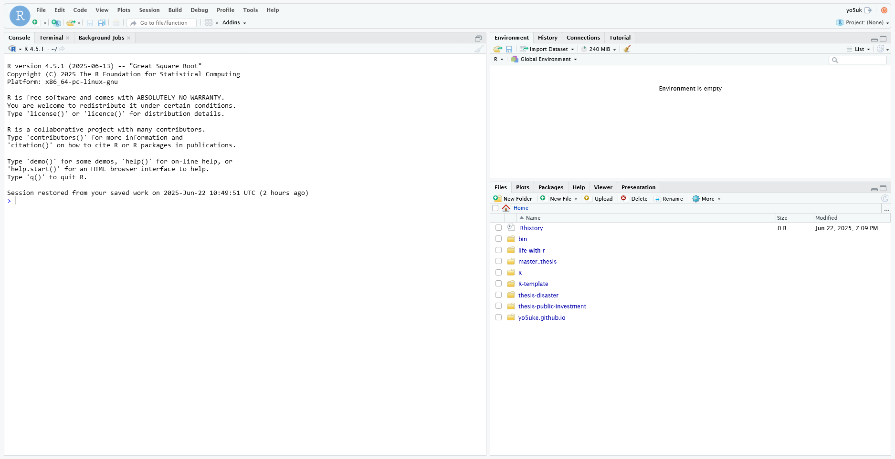
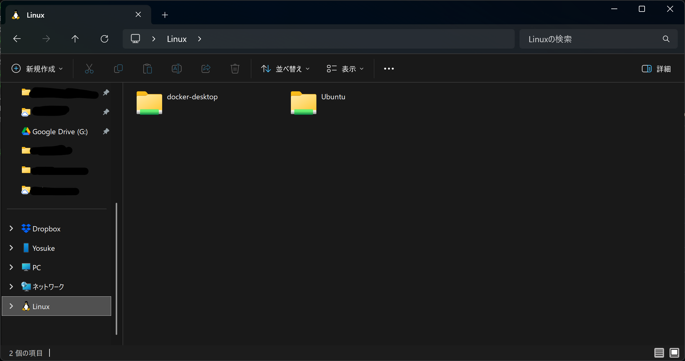
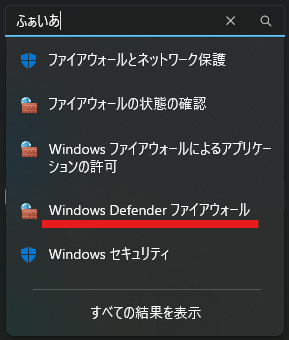

はじめに
RStudio Serverのインストール方法や使い方についてまとめます。
RStudio Serverを使えば各OSの違いに左右されず、どの端末からでも同じ環境で作業を継続できるのが特徴です。複数人での分析や大規模データ処理にも適しており、環境構築の一元化と省力化が図れます。
僕は最近仕事でRStudio Serverを使うかも…みたいな流れがあったので、改めてまとめてみることにしました。
環境
Windows 11
PowerShell 7がインストール済み
PowerShellはこちらからインストールできますが、よくわからない場合は標準インストールされている「ターミナル」でも大丈夫です。
インストール
WSL
まずはWSLからインストールします。WSLはWindows Subsystem for Linuxの略であり、Windows上でネイティブにLinux環境を動作させる機能で、開発やデータ分析をLinux向けツールで行える柔軟な作業環境を提供してくれます。
まずはPowerShellを管理者権限で開きます。

次に以下のコマンドを入力し、実行します。
wsl --installインストールが終わると、Linuxディストリビューションのユーザー名とパスワードの作成を求められます1。
ユーザー名は何でも大丈夫です。パスワードもめちゃくちゃ簡単で問題ありません。パスワードは画面上には表示されませんが、ちゃんと入力されています。慌てて何回も入力しないようにしてください。
また、ユーザー名とパスワードは後ほど使うので忘れないようにしてください。
RとRStudio Server
設定まで終わったら、アプリの一覧からUbuntu（これがLinuxのディストリビューションです）を開いてください。
本ページではUbuntu 22を前提に進めています。もしインストールしたバージョンが他のバージョンであった場合は若干コードが変わる可能性がありますので、このページでバージョンを該当するものに変更したうえで都度コードをコピーし、実行してみてください。
バージョンを確認するためには以下をUbuntu上で実行してください。
lsb_release -aするとコンソール画面が出てきますので、以下のコードを順々に入力、実行していきます。
sudo apt update
sudo apt upgrade -y続いてRをインストールします。こちらのページからの転用です。
# update indices
sudo apt update -qq
# install two helper packages we need
sudo apt install --no-install-recommends software-properties-common dirmngr
# add the signing key (by Michael Rutter) for these repos
# To verify key, run gpg --show-keys /etc/apt/trusted.gpg.d/cran_ubuntu_key.asc
# Fingerprint: E298A3A825C0D65DFD57CBB651716619E084DAB9
wget -qO- https://cloud.r-project.org/bin/linux/ubuntu/marutter_pubkey.asc | sudo tee -a /etc/apt/trusted.gpg.d/cran_ubuntu_key.asc
# add the repo from CRAN -- lsb_release adjusts to 'noble' or 'jammy' or ... as needed
sudo add-apt-repository "deb https://cloud.r-project.org/bin/linux/ubuntu $(lsb_release -cs)-cran40/"
# install R itself
sudo apt install --no-install-recommends r-base次にRStudio Serverをインストールします。Posit社のガイドからの転用です。
sudo apt-get install gdebi-core
wget https://download2.rstudio.org/server/focal/amd64/rstudio-server-2025.05.1-513-amd64.deb
sudo gdebi rstudio-server-2025.05.1-513-amd64.debこれでインストールは完了です。続いて次のコマンドを実行し、RStudio Serverを立ち上げます。
sudo rstudio-server startRStudio Serverを立ち上げる
それではRStudio Serverを立ち上げていきましょう。上のコマンドで起動までできているので、ブラウザ上で立ち上げていきます。
PC上の任意のブラウザを開き、アドレスバーにlocalhost:8787と入力し、開きます。
すると以下のような画面が出てきます。

ユーザー名とパスワードを求められますので、先ほどUbuntuで設定したものを入力してください。
そうしてサインインすることで、RStudioの画面に入ることができます。

ここからは通常のRと同様に作業を進めることができます。
ファイルの扱いについて
どのようにしてデータを入れたりファイルを追加したりすればよいかについて説明します。
RStudio上でできることはデスクトップ版とほとんど同じで、さらにエクスプローラー上の動作も通常と同じようにすることができます。
エクスプローラーを開いて左のサイドバーを一番下までスクロールすると、Linuxが作成されていることがわかります。

するとUbuntuが中に作成されていますので、ダブルクリックで入っていきます。home/[設定したユーザー名]があると思うので、その中に入ると、そこがWindowsでいうところのC:\Users\ユーザー\に該当します。ベースとなるディレクトリです。
この中にプロジェクトのフォルダを作成していけば、RStudio Server上でも見ることができますし、入れたファイルを操作することが可能になります。
まあまあ面倒なところにあるので、クイックアクセスにピン留めしたりデスクトップにショートカットを作ったりして置くのが便利だと思います。
ここまでの操作で個人の作業はできるようになりました！続いては、ホストとなるPCで環境を作成し、それを別のデバイスからアクセスできるようにする方法についてまとめていきます！
リモートデスクトップを活用する
例えば扱うデータが大きすぎて個々のノートパソコンでは扱いきれず、1台高スペックのデスクトップを用意してそこにアクセスして作業をしたい、というようなケースを考えます。
ここで個々のPCからデスクトップにアクセスして作業をするのですが、この作業はあくまでもデスクトップ上で行われるので、各PCがハイスペックである必要はありません。デスクトップの画面を自分のPCに投影しているようなイメージです。
環境
無線LAN（Wi-Fi）を使用
ホストと各PCは同じネットワーク（Wi-Fi）を使用
デスクトップの環境構築
まずすべきことは、上で書いたような環境構築を、デスクトップPC（ホスト）で実行することです。RStudio Serverを使えるようにしておいてください。
IPアドレスを確認
【ホストのPC】
他のPC（クライアント）からアクセスできるようにするには、まずホストのIPアドレスを確認しておく必要があります。PowerShellを開いたら、以下のコマンドを実行します。
ipconfig実行すると、なにやら長々と表示されるはずです。「Windows IP 構成」の下に例えば「イーサネット アダプター vEthernet (Default Switch):」や、「イーサネット アダプター vEthernet (WSL (Hyper-V firewall)):」などいろいろ出てきます。
その中の下の方に「Wireless LAN adapter Wi-Fi:」があります。この中に「IPv4 アドレス」があり、その右に数字が書かれています（例：192.xxx.x.xx）。これを後ほど使うので、押さえておいてください。
また、もう一度PowerShellは使うので、画面も開いておいてください。
【ホストPCのWSL】
次にWindowsのアプリ一覧からUbuntu を開きます。
開けたら次のコマンドを実行してください。
ip addrこれも同様に2種類出てくると思いますが、下にあるeth0が必要な方です。「inet 172.xxx.xx.xx」のような形で表示されていると思いますので、これを押さえておきます。スラッシュの前までで大丈夫です。
ポートの設定
今押さえたWSLの方のIPアドレスを使用します（後で確認した方です）。
PowerShellに戻って次のコマンドを実行します。
netsh interface portproxy add v4tov4 listenport=8787 listenaddress=0.0.0.0 connectport=8787 connectaddress=[WSLのIPアドレス]最後の部分を四角括弧ごとWSLのIPアドレスに置き換えて下さい。
ホストPCでファイアウォールの設定
次に引き続きホストのPC上で、ファイアウォールの設定を行います。
設定を開き、検索窓から「ファイアウォール」と検索し、「Windows Defender ファイアウォール」をクリックして開きます。

開いたウィンドウの左側に「詳細設定」という項目があるのでクリックして進みます。
「受信の規則」→右側から「新しい規則」→「ポート」を選択して次へ進み、TCP、特定のローカルポートに「8787」を入力して次へ進み、「接続を許可する」でさらに次へ進み、すべてのチェックボックスにチェックが入った状態で次へ進みます。
名前を付ける必要がありますが、何でもよいと思います。RStudio Serverを使っていることがわかる名前が良いと思います。入力したら完了で終わりです。
以下のコマンドをPowerShellで入力すれば同じことができます。こっちの方が楽かもですね。
New-NetFirewallRule -DisplayName "RStudio Server" -Direction Inbound -LocalPort 8787 -Protocol TCP -Action AllowWSL側でRStudio Serverの動作を確認
Ubuntuを再度開き、以下のコマンドを実行してRStudio Serverが起動しているかどうかを再確認します。
sudo rstudio-server statussudoで始まるコマンドはパスワードを求められますので適宜入力して進んでください。
ここでactive (running)が記載されていればOKです。もしinactive (dead)となっていたら、以下のコマンドから起動してください。
sudo rstudio-server startブラウザでアクセスを確認する
それではホスト上で動作確認をしてみましょう。
ブラウザを立ち上げlocalhost:8787を入力し開きます。先ほどと同様のサインイン画面が出てくれば問題ありません。
別端末（クライアント）からのアクセス確認
クライアントからは先ほど確認したローカルのIPアドレスをlocalhostの代わりに使用します。例えば192.xxx.x.xx:8787といった具合です。
これが開けてサインイン画面に移行できれば成功です。自分のPCのスペックに依存せず、ホストのPCにアクセスしてRStudioから作業を行うことができます。
繰り返しになりますが、実行しているのはホストのデスクトップです。ブラウザであれば何でもよいので、同じネットワークに接続しているのであればスマホのブラウザからアクセスすることもできます。
終わり！
特にリモートデスクトップの説明で長くなってしまいましたが、これでRStudio Serverを使えるようになるはずです。
用途に合わせて、いろいろ試してみてください！
注
求められない場合は、続けて
wslとだけ入力して実行してください。↩︎